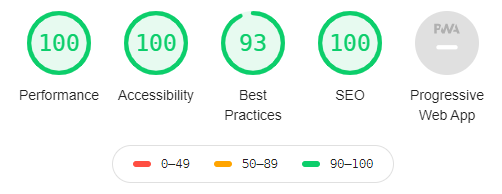
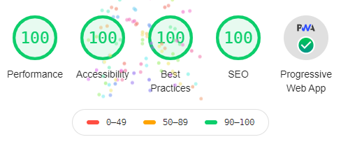
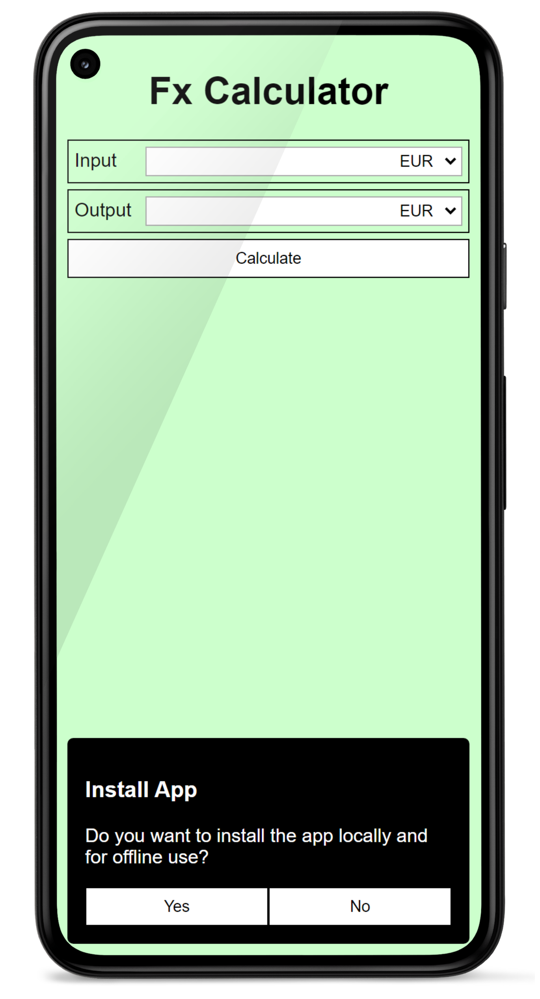

Fx Calculator
Fx Calculator ist eine einfache PWA um Währungen umzurechnen.
Projekt Setup
Erstellen Sie einen leeren Projektordner auf Ihrem Rechner die Bennenung ist grundsätzlich egal, jedoch fx-calculator würde sich anbieten.
Innerhalb des Ordners erstellen Sie eine Datei package.json. Als Inhalt der Datei fügen Sie 2 geschweifte Klammern ein:
{}
Installieren Sie einen Web-Server zur lokalen Entwicklung mit npm i http-server --save-dev. Nach der Installation können Sie ein script in der Datei package.json hinzufügen um den Web-Server zu starten. Das finale package.json sollte folgenden Inhalt aufweisen:
{
"scripts": {
"start": "http-server docs -p 8080"
},
"devDependencies": {
"http-server": "^14.0.0"
}
}
Es soll noch ein Ordner docs erstellt werden, welcher alle Projektdateien enhält. Durch die Ausführung von npm start kann nun die lokale Entwicklung begonnen werden.
Hinweis
Für ein Deployment auf Github Pages sollten alle Dateien, welche zur App gehören im Ordner docs liegen. Dieser Ordner wird dann über einen Web-Server öffentlich bereitgestellt.
Es sollen ebenfalls 4 Bilder (Icon 1, Icon 2, Icon 3, Icon 4) heruntergeladen werden und im Ordner docs abgelegt werden.
{kind=link}
{kind=link}
{kind=link}
{kind=link}
HTML/CSS

Die Benutzerschnittstelle ist sehr einfach gehalten. Im folgenden findet sich das HTML-Dokument und das zugehörige CSS-Stylesheet:
<!DOCTYPE html>
<html lang="en">
<head>
<meta charset="UTF-8">
<meta name="viewport" content="width=device-width, initial-scale=1.0">
<meta http-equiv="X-UA-Compatible" content="ie=edge">
<meta name="description" content="FX-Calculator Demo PWA">
<title>Fx Calculator PWA</title>
<link rel="stylesheet" href="style.css">
</head>
<body>
<main>
<h1>Fx Calculator</h1>
<section>
<label for="input-value">Input</label>
<input id="input-value" type="number" name="input-value">
<select title="Input Currency" name="input-currency"></select>
</section>
<section>
<label for="output-value">Output</label>
<input id="output-value" name="output-value" readonly>
<select title="Output Currency" id="output-currency" name="output-currency"></select>
</section>
<button>Calculate</button>
</main>
</body>
</html>
body {
margin:0;
background:#ccffcc;
font-family: sans-serif;
}
h1 {
text-align: center;
}
main {
padding:10px;
}
section {
border:1px solid black;
padding:5px;
margin-bottom:5px;
display:flex;
justify-content: space-between;
align-items: center;
}
section label {
flex: 0 0 60px;
}
section input {
flex: 1 1 100%;
padding: 4px;
border:1px solid #aaa;
border-right: none;
outline:none;
}
section select {
flex: 0 0 60px;
padding:3px;
border:1px solid #aaa;
border-left: none;
}
button {
border:1px solid black;
background:white;
width:100%;
padding:8px;
}
Diese beiden Quellcodeabschnitte sind jeweils in die Datei docs/index.html bzw. docs/style.css zu kopieren.
Verhalten
Das gesamte Verhalten der Applikation findet sich in der Datei app.js, welche entsprechend zu erstellen ist. Die Datei ist ebenfalls in das HTML-Dokument einzubinden:
<script src="app.js" async></script>
Dropdown Inhalt füllen
Es gibt zwei Dropdowns (select), welche noch keine Inhalte (option) haben. Da die beiden Dropdowns dieselben Inhalte haben, können diese dynamisch gefüllt werden.
Mit der Funktion querySelectorAll sollen alle Dropdowns ausgewählt werden. querySelectorAll liefert eine NodeList als Resultat.
Mit der Funktion forEach der NodeList kann durch die Ergebnismenge iteriert werden. Über die Eigenschaft innerHTML wird der HTML-Inhalt des entsprechenden Elements angegeben.
document.querySelectorAll('select').forEach(element => {
element.innerHTML = `
<option value="EUR">EUR</option>
<option value="USD">USD</option>
<option value="CHF">CHF</option>
<option value="SEK">SEK</option>
<option value="BTC">BTC</option>
`;
});
Funktion zur Währungsumrechnung
Um aktuelle Währungskurse abzufragen kann die Fixer API verwendet werden. In der Dokumentation wird der Latest Rates Endpoint beschrieben, welcher im Kontext des Währungsrechners verwendet werden kann. Die Struktur des Endpoints sieht so aus, dass base eine Ausgangswährung und als symbols Zielwährungen angegeben werden können:
https://data.fixer.io/api/latest?base=EUR&symbols=USD,SEK,CHF&access_key=API_KEY
Das Ergebnis des Aufrufes sieht folgendermaßen aus:
{
"success": true,
"timestamp": 1591604165,
"base": "EUR",
"date": "2020-06-08",
"rates": {
"USD": 1.130998,
"SEK": 10.395589,
"CHF": 1.088433,
"BTC": 0.000022
}
}
Da die Fixer API mittlerweile einen API-Key benötigt und ab 1000 Aufrufen/Monat kostenpflichtig ist, soll die API gemockt werden. Dazu kann einfach eine Antwort der API als JSON-Dokument abgelegt und anstelle der richtigen API abgefragt werden. Es sollte dazu eine Datei docs/fixer.json angelegt werden und das JSON-Beispiel von oben hineikopiert werden. Die Kurse können natürlich nach belieben angepasst werden.
// const fixerUri = 'https://data.fixer.io/api/latest?base=EUR&symbols=USD,SEK,CHF&access_key=API_KEY';
const fixerUri = "fixer.json";
Um nun die tatsächliche Währungsumrechnung durchzuführen soll eine Function convert erstellt werden. Da diese Funktion immer den aktuellen Währungskurs über die API abfragen soll, wird diese als async deklariert. Als Übergabeparameter bekommt die Funktion den Ausgangswert (inputValue), die Ausgangswährung (inputCurrency) und die Zielwährung (outputCurrency). Als Rückgabewert soll die Funktion den Ausgangswert in die Zielwährung umrechnen.
Da die Funktion als async deklariert ist, kann await für asynchrone Aufrufe wie zum Beispiel fetch verwendet werden. Im ersten Schritt werden also die Währungskurse über die Fixer API abgefragt und der Response-Body (welcher als String repräsentiert ist) in eine JSON-Repräsentation überführt (response.json()). Der Rest der Funktion führt die Währungsumrechnung durch:
async function convert(inputValue, inputCurrency, outputCurrency) {
const response = await fetch(fixerUri);
const data = await response.json();
const rates = data['rates'];
rates["EUR"] = 1.;
return inputValue / rates[inputCurrency] * rates[outputCurrency];
}
Um das Runden von Währungen auf fixe Dezimalstellen durchzuführen wird noch eine round Funktion implementiert:
function round(value, decimals) {
return (Math.round(value * 100) / 100).toFixed(decimals);
}
Button Click
Um nun die eigentliche Aufgabe der App zu realisieren wird ein EventListener für das Click-Event auf dem Button registriert. Der anonyme EventListener ist ebenfalls als async deklariert, da die Funktion convert mit await aufgerufen wird.
document.querySelector('button').addEventListener('click', async () => {
const inputCurrency = document.querySelector('[name="input-currency"]').value;
const outputCurrency = document.querySelector('[name="output-currency"]').value;
const inputValue = document.querySelector('[name="input-value"]').value;
const outputValue = await convert(inputValue, inputCurrency, outputCurrency);
document.querySelector('[name="output-value"]').value = round(outputValue, 2);
});
Die Funktion selektiert alle wichtigen Werte aus dem DOM, welche für die Berechnung wichtig sind (inputCurrency, outputCurrency und inputValue). Diese Parameter werden an die Funktion convert übergeben und das Ergebnis wird am entsprechenden DOM-Element gesetzt. Für eine schönere Darstellung wird noch die Funktion round genutzt, um den Zielbetrag auf 2 Dezimalstellen zu runden.
Zwischenstand mit Lighthouse prüfen
Die App ist nun vollkommen funktionsfähig umgesetzt. Die Prüfung mit Lighthouse zeigt ebenfalls ein passables Bild:

Die fehlenden 100 bei den Best Practices resultieren daher, dass der lokale Web-Server kein HTTP/2 unterstützt, dies wird über ein Deployment auf zum Beipsiel Github Pages beseitigt.
Die PWA hat 3 Aspekte, welche mit Lighthouse geprüft werden:
- Fast and reliable
- Installable
- PWA Optimized
Zumindest Installable und PWA Optimized sind derzeit noch unzureichend unterstützt.
Web-App Manifest
Für Web-Apps welche am Homescreen installierbar sein sollen, muss ein Web-App Manifest erzeugt und im HTML verlinkt werden. Der Name des JSON-Dokuments soll manifest.webmanifest lauten.
Das Web-App Manifest ist ein JSON-Dokument mit wichtigen Eigenschaften der App:
- Jede PWA benötigt zumindest ein Icon, es können für unterschiedliche Ansichten (zB Android Recents) weitere Icons angegeben werden (icons). Ein Icon benötigt dabei eine Größenangabe (
sizes), eine Typangabe (types) und eine Zweckangabe (purpose). - Jede PWA benötigt einen Titel (
name), darüberhinaus kann auch ein Kurztitel als Abkürzung angegeben werden (short_name) - Es können Farbwerte für unterschiedliche Ansichten definiert werden (
background_colorodertheme_color) - Mit
displaywird definiert, ob Teile des Web-Browsers noch angezeigt wreden sollen oder nicht.standalonebedeutet die Addressleiste wird versteckt. - Mit
start_urlwird angegeben, welche URL der PWA geöffnet werden soll, wenn eine Benutzerin die App vom Homescreen startet. - Mit
scopewird angegeben, welche Pfade Teil der PWA sind und welche nicht. Mit/wird angegen das alles unter der Baseurl Teil der PWA ist. Mit./wird angegeben das alles ab der relativen Baseurl Teil der PWA ist.
{
"name": "Fx Calculator",
"short_name": "Fx Calc",
"display": "standalone",
"start_url": "./",
"scope": "./",
"background_color": "#cfc",
"theme_color": "#cfc",
"description": "Simple Fx Calculator based on fixer.io API",
"icons": [
{
"src": "maskable-icon512.png",
"sizes": "512x512",
"type": "image/png",
"purpose": "maskable"
}, {
"src": "icon512.png",
"sizes": "512x512",
"type": "image/png",
"purpose": "any"
}, {
"src": "icon16.png",
"sizes": "16x16",
"type": "image/png",
"purpose": "any"
}
]
}
Weitere Details zum Manifest und die entsprechende Web-Browser Unterstützung sollte im Mozilla Developer Network nachgeschlagen werden.
Das oben gezeigte JSON soll in die Datei docs/manifest.webmanifest kopiert werden. Das Manifest soll im head des HTML-Dokumentes über ein link eingebunden werden:
<link rel="manifest" href="manifest.webmanifest">
Installable

Die Installierbarkeit einer PWA ist sichergestellt, wenn ein Web-App Manifest vorliegt und ein Service Worker registriert ist. Der Service Worker kann auch eine leere JavaScript Datei sein.
Es soll dazu eine leere sw.js Datei erstellt werden. Im HTML-Dokument soll des Weiteren ein Skript-Tag angegeben werden, welches die Registrierung des Service Workers enthalten soll. Mit if ('serviceWorker' in navigator) wird geprüft ob die Service Worker Funktionalität im Web-Browser unterstützt wird.
<script>
if ('serviceWorker' in navigator) {
navigator.serviceWorker.register('sw.js');
}
</script>
PWA Optimized
Für diesen Aspekt müssen einige allgemeine Einstellungen der PWA vorgenommen werden. Für den Fx Calculator müssen dazu noch ein Apple Touch Icon und eine Theme Color als Meta-Tag hinzugefügt werden:
<meta name="theme-color" content="#ccffcc">
<link rel="apple-touch-icon" href="icon192.png">
PWA Optimized voll zu untersützten wird HTTPs benötigt. Dies wird erst durch ein Deployment auf zum Beispiel Github Pages ermöglicht.
Service Worker Implementierung
Der Service Worker wurde über die Datei sw.js registriert. Dabei gibt es 2 wichtige Events, welche vom Service Worker bearbeitet werden können:
Install-Event: Dieses Event wird getriggert, wenn derService-Workerdas erstemal installiert wird. Dort können zum Beispiel alle Dateien, welche für die PWA benötigt werden bereits geladen und in einen Cache geladen werden.Fetch-Event: Dieses Event wird immer getriggert, wenn die App einen HTTP-Request triggert. DerService Workerfungiert dabei ähnlich wie ein Proxy und es können beliebige Strategien implementiert werden.
Install-Event
Mit dem Schlüsselwort self wird der Service Worker referenziert und damit können EventListener registriert werden. Der EventListener bekommt dabei ein Event vom Typ InstallEvent, welches die Methode waitUntil aufweist.
An die Methode waitUntil kann eine asynchrone Funktion übergeben werden. Der Service Worker würde erst in den Status installed wechseln, wenn die übergebenen Funktion ihre Aufgabe beendet hat. Im unten angeführten Fall wird ein neuer Cache mit dem Namen fxcalc-v1 erzeugt und es werden über die Methode addAll einige Ressourcen vom Netzwerk geladen und in den Cache gelegt. Die Angaben der Ressourcen nutzen dabei relative Pfade, sodass es egal ist in welchem Ordner sich die PWA am Web-Server befindet.
self.addEventListener('install', (event) => {
event.waitUntil(
caches.open('fxcalc-v1')
.then(cache => cache.addAll([
'./',
'./index.html',
'./app.js',
'./icon512.png',
'./maskable-icon512.png',
'./icon192.png',
'./icon16.png',
'./fixer.json',
'./manifest.webmanifest'
]))
);
});
Hinweis
Der Service Worker wird nicht im Main-Thread ausgeführt und beeinflusst damit die Performance des Pageloads nicht. Am Besten sehen Sie sich dazu den Pageload im Performance-Tab der DevTools an. Wichtig ist dabei, dass Sie im Application-Tab der DevTools mit Clear Site Data alle Caches und sonstigen Daten löschen.
Fetch-Event
Mit dem Fetch-Event kann die Strategie des Service Workers implementiert werden, welche verfolgt werden soll im Umgang mit Caching, Netzwerk-Optimierung und Offline-Verfügbarkeit. Mit der Methode respondWith des Events kann dabei spezifiziert werden, welches Ergebnis vom Netzwerk an die Render Engine zurückgegeben werden soll.
Im folgenden wird folgende Strategie implementiert:
- Falls eine Netzwerkverbindung vorhanden ist, soll diese immer verwendet werden
- Eine Antwort vom Netzwerk soll immer gecacht werden, sodass sich immer der neueste Stand einer Ressource im Cache befindet
- Falls keine Netzwerkverbindung vorhanden ist, sollen Ressourcen aus dem Cache geladen werden
self.addEventListener('fetch', (event) => {
event.respondWith(
caches.open('fxcalc-v1').then((cache) => {
return fetch(event.request) // erzeug eine Anfrage an das Netzwerk
.then((response) => { // then: falls die Anfrage erfolgreich ist (online)
cache.put(event.request, response.clone());
return response;
})
.catch(() => cache.match(event.request)); // catch: falls die Anfrage nicht an das Netzwerk gestellt werden konnte (offline)
})
);
});
Hinweis
Es können natürlich viele andere Service Worker Strategien implementiert werden. Die Website serviceworke.rs zeigt einige Strategien auf. Es können beliebige Strategien implementiert werden, welche natürlich komplett von Ihrem Use-Case abhängen.
Finale Lighthouse Prüfung
Nachdem alle Komponenten der App inkl. Service Worker implementiert wurden, soll nun ein Deployment auf Github Pages stattfinden. Github Pages ermöglicht HTTP/2 und HTTPs, sodass alle offenen Punkte von Lighthouse behoben werden konnten. Das Ergebnis sollte folgendermaßen aussehen (inkl. Easteregg):

Eine vollständige Lösung des Projekt bis zu diesem Punkt, findet sich als App auf Github Pages sowie der Quellcode innerhalb eines Git-Repositories.
Aufgabe: Installation Prompt
Ähnlich wie im Beispiel der Simple PWA soll ein eigener Prompt-Mechanismus integriert werden, welcher die Benutzerin anfragt, ob die PWA installiert werden soll. Die grafische Darstellung des Prompt soll in etwa der Ansicht im Screenshot entsprechen:

Folgende Aspekte für den Prompt sind zu beachten:
- Es soll das Event
beforeinstallpromptabgehört werden und der eigene Prompt wie im Screenshot dargestellt, soll angezeigt werden. - Wenn die Benutzerin in der Anfrage
Yesangibt, soll der Browser-Prompt gezeigt werden (Nutzung der Funktionpromptdes BeforeInstallPromptEvent) und das eigene Prompt wieder geschlossen werden. - Wenn die Benutzerin die Anfrage mit
Nobeantwortet, soll nur das eigene Prompt geschlossen werden und sonst nichts passieren.